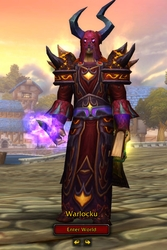
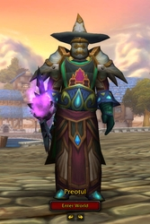
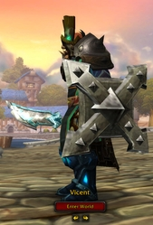

Bunuri virtuale
(© Alexandru Patriche, 2011)
Mai jos sunt prezentate personajele pe care le detin, impreuna cu detaliile
relevante si valoarea estimata pe piata de bunuri virtuale.
| Personaj: Warlocku
Clasa: Warlock Nivel: 85 ilvl: 370 Valoare estimata: 2000 USD Descriere: Warlocii fac damage prin "foc" sau "umbra", dreneaza sau blesteama inamicul. Ei isi pot converti viata in mana si pot convoca unul sau mai multi membri al unui grup in locatia in care se afla personajul. |
 |
| Personaj: Preotul
Clasa: Priest Nivel: 85 ilvl: 350 Valoare estimata: 1000 USD Descriere: Preotii sunt "medici" bine rotunjiti cu o larga varietate de vraji. Ei pot face si DPS (damage-per-second). |
 |
| Personaj: Vicent
Clasa: Paladin Nivel: 85 ilvl: 347 Valoare estimata: 800 USD Descriere: Paladinii sunt luptatori si aparatori ce ii regasim in armuri grele din fier care folosesc magia sfanta (Holy magic) pentru a vindeca ranile intr-o lupta. Ei pot mânui ciocane, sabii, scuturi. Paladinul poate juca rolul de Tank, healer sau dps. |
 |
Nota: valorile estimate sunt obtinute prin colectarea si analizarea datelor preluate de pe site-uri de licitatii de specialitate.
Home | Bunuri Virtuale | Dictionar de termeni | Adrese utile | Contact